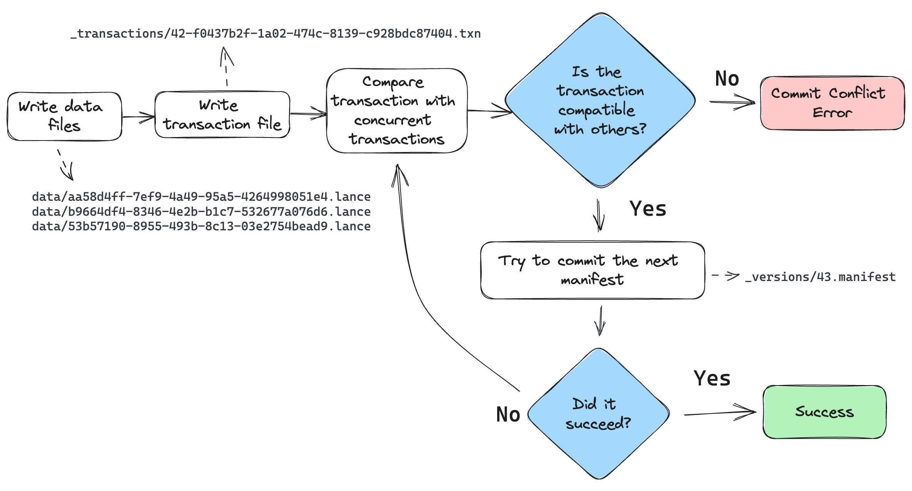
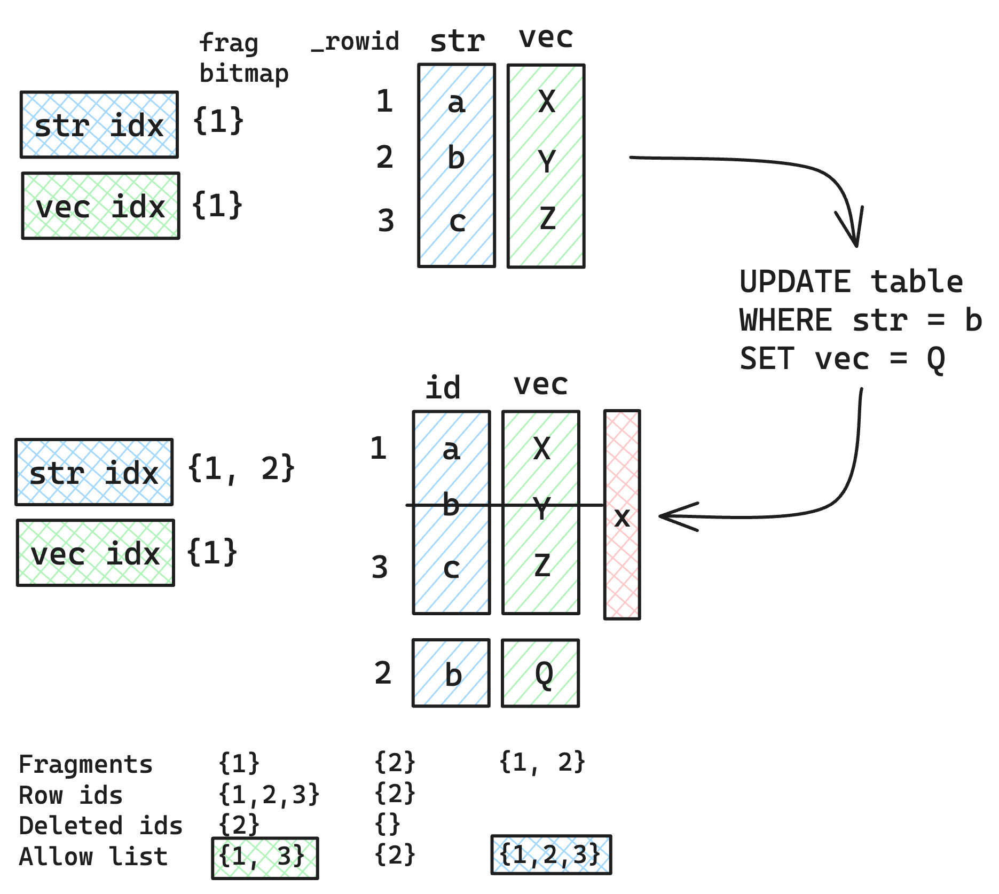

Lance Table Format¶
Dataset Directory¶
A Lance Dataset is organized in a directory.
/path/to/dataset:
data/*.lance -- Data directory
_versions/*.manifest -- Manifest file for each dataset version.
_indices/{UUID-*}/index.idx -- Secondary index, each index per directory.
_deletions/*.{arrow,bin} -- Deletion files, which contain IDs of rows
that have been deleted.
A Manifest file includes the metadata to describe a version of the dataset.
message Manifest {
// All fields of the dataset, including the nested fields.
repeated lance.file.Field fields = 1;
// Schema metadata.
map<string, bytes> schema_metadata = 5;
// Fragments of the dataset.
repeated DataFragment fragments = 2;
// Snapshot version number.
uint64 version = 3;
// The file position of the version auxiliary data.
// * It is not inheritable between versions.
// * It is not loaded by default during query.
uint64 version_aux_data = 4;
message WriterVersion {
// The name of the library that created this file.
string library = 1;
// The version of the library that created this file. Because we cannot assume
// that the library is semantically versioned, this is a string. However, if it
// is semantically versioned, it should be a valid semver string without any 'v'
// prefix. For example: `2.0.0`, `2.0.0-rc.1`.
//
// For forward compatibility with older readers, when writing new manifests this
// field should contain only the core version (major.minor.patch) without any
// prerelease or build metadata. The prerelease/build info should be stored in
// the separate prerelease and build_metadata fields instead.
string version = 2;
// Optional semver prerelease identifier.
//
// This field stores the prerelease portion of a semantic version separately
// from the core version number. For example, if the full version is "2.0.0-rc.1",
// the version field would contain "2.0.0" and prerelease would contain "rc.1".
//
// This separation ensures forward compatibility: older readers can parse the
// clean version field without errors, while newer readers can reconstruct the
// full semantic version by combining version, prerelease, and build_metadata.
//
// If absent, the version field is used as-is.
optional string prerelease = 3;
// Optional semver build metadata.
//
// This field stores the build metadata portion of a semantic version separately
// from the core version number. For example, if the full version is
// "2.0.0-rc.1+build.123", the version field would contain "2.0.0", prerelease
// would contain "rc.1", and build_metadata would contain "build.123".
//
// If absent, no build metadata is present.
optional string build_metadata = 4;
}
// The version of the writer that created this file.
//
// This information may be used to detect whether the file may have known bugs
// associated with that writer.
WriterVersion writer_version = 13;
// If present, the file position of the index metadata.
optional uint64 index_section = 6;
// Version creation Timestamp, UTC timezone
google.protobuf.Timestamp timestamp = 7;
// Optional version tag
string tag = 8;
// Feature flags for readers.
//
// A bitmap of flags that indicate which features are required to be able to
// read the table. If a reader does not recognize a flag that is set, it
// should not attempt to read the dataset.
//
// Known flags:
// * 1: deletion files are present
// * 2: row ids are stable and stored as part of the fragment metadata.
// * 4: use v2 format (deprecated)
// * 8: table config is present
uint64 reader_feature_flags = 9;
// Feature flags for writers.
//
// A bitmap of flags that indicate which features must be used when writing to the
// dataset. If a writer does not recognize a flag that is set, it should not attempt to
// write to the dataset.
//
// The flag identities are the same as for reader_feature_flags, but the values of
// reader_feature_flags and writer_feature_flags are not required to be identical.
uint64 writer_feature_flags = 10;
// The highest fragment ID that has been used so far.
//
// This ID is not guaranteed to be present in the current version, but it may
// have been used in previous versions.
//
// For a single fragment, will be zero. For no fragments, will be absent.
optional uint32 max_fragment_id = 11;
// Path to the transaction file, relative to `{root}/_transactions`. The file at that
// location contains a wire-format serialized Transaction message representing the
// transaction that created this version.
//
// This string field "transaction_file" may be empty if no transaction file was written.
//
// The path format is "{read_version}-{uuid}.txn" where {read_version} is the version of
// the table the transaction read from (serialized to decimal with no padding digits),
// and {uuid} is a hyphen-separated UUID.
string transaction_file = 12;
// The next unused row id. If zero, then the table does not have any rows.
//
// This is only used if the "stable_row_ids" feature flag is set.
uint64 next_row_id = 14;
message DataStorageFormat {
// The format of the data files (e.g. "lance")
string file_format = 1;
// The max format version of the data files. The format of the version can vary by
// file_format and is not required to follow semver.
//
// Every file in this version of the dataset has the same file_format version.
string version = 2;
}
// The data storage format
//
// This specifies what format is used to store the data files.
DataStorageFormat data_format = 15;
// Table config.
//
// Keys with the prefix "lance." are reserved for the Lance library. Other
// libraries may wish to similarly prefix their configuration keys
// appropriately.
map<string, string> config = 16;
// Metadata associated with the table.
//
// This is a key-value map that can be used to store arbitrary metadata
// associated with the table.
//
// This is different than configuration, which is used to tell libraries how
// to read, write, or manage the table.
//
// This is different than schema metadata, which is used to describe the
// data itself and is attached to the output schema of scans.
map<string, string> table_metadata = 19;
// The version of the blob dataset associated with this table. Changes to
// blob fields will modify the blob dataset and update this version in the parent
// table.
//
// If this value is 0 then there are no blob fields.
uint64 blob_dataset_version = 17;
// The base paths of data files.
//
// This is used to determine the base path of a data file. In common cases data file paths are under current dataset base path.
// But for shallow cloning, importing file and other multi-tier storage cases, the actual data files could be outside of the current dataset.
// This field is used with the `base_id` in `lance.file.File` and `lance.file.DeletionFile`.
//
// For example, if we have a dataset with base path `s3://bucket/dataset`, we have a DataFile with base_id 0, we get the actual data file path by:
// base_paths[id = 0] + /data/ + file.path
// the key(a.k.a index) starts from 0, increased by 1 for each new base path.
repeated BasePath base_paths = 18;
// The branch of the dataset. None means main branch.
optional string branch = 20;
}
Fragments¶
DataFragment represents a chunk of data in the dataset. Itself includes one or more DataFile,
where each DataFile can contain several columns in the chunk of data.
It also may include a DeletionFile, which is explained in a later section.
message DataFragment {
// The ID of a DataFragment is unique within a dataset.
uint64 id = 1;
repeated DataFile files = 2;
// File that indicates which rows, if any, should be considered deleted.
DeletionFile deletion_file = 3;
// TODO: What's the simplest way we can allow an inline tombstone bitmap?
// A serialized RowIdSequence message (see rowids.proto).
//
// These are the row ids for the fragment, in order of the rows as they appear.
// That is, if a fragment has 3 rows, and the row ids are [1, 42, 3], then the
// first row is row 1, the second row is row 42, and the third row is row 3.
oneof row_id_sequence {
// If small (< 200KB), the row ids are stored inline.
bytes inline_row_ids = 5;
// Otherwise, stored as part of a file.
ExternalFile external_row_ids = 6;
} // row_id_sequence
oneof last_updated_at_version_sequence {
// If small (< 200KB), the row latest updated versions are stored inline.
bytes inline_last_updated_at_versions = 7;
// Otherwise, stored as part of a file.
ExternalFile external_last_updated_at_versions = 8;
} // last_updated_at_version_sequence
oneof created_at_version_sequence {
// If small (< 200KB), the row created at versions are stored inline.
bytes inline_created_at_versions = 9;
// Otherwise, stored as part of a file.
ExternalFile external_created_at_versions = 10;
} // created_at_version_sequence
// Number of original rows in the fragment, this includes rows that are now marked with
// deletion tombstones. To compute the current number of rows, subtract
// `deletion_file.num_deleted_rows` from this value.
uint64 physical_rows = 4;
}
The overall structure of a fragment is shown below. One or more data files store the columns of a fragment. New columns can be added to a fragment by adding new data files. The deletion file (if present), stores the rows that have been deleted from the fragment.

Every row has a unique ID, which is an u64 that is composed of two u32s: the fragment ID and the local row ID. The local row ID is just the index of the row in the data files.
Dataset Update and Data Evolution¶
Lance supports fast dataset update and schema evolution via manipulating the Manifest metadata.
Appending is done by appending new Fragment to the dataset. While adding columns is done
by adding new DataFile of the new columns to each Fragment. Finally,
Overwrite a dataset can be done by resetting the Fragment list of the Manifest.

Schema & Fields¶
Fields represent the metadata for a column. This includes the name, data type, id, nullability, and encoding.
Fields are listed in depth first order, and can be one of:
- parent (struct)
- repeated (list/array)
- leaf (primitive)
For example, the schema:
Would be represented as the following field list:
| name | id | type | parent_id | logical_type |
|---|---|---|---|---|
a |
1 | LEAF | 0 | "int32" |
b |
2 | PARENT | 0 | "struct" |
b.c |
3 | REPEATED | 2 | "list" |
b.c |
4 | LEAF | 3 | "int32" |
b.d |
5 | LEAF | 2 | "int32" |
Field Encoding Specification¶
Column-level encoding configurations are specified through PyArrow field metadata:
import pyarrow as pa
schema = pa.schema([
pa.field(
"compressible_strings",
pa.string(),
metadata={
"lance-encoding:compression": "zstd",
"lance-encoding:compression-level": "3",
"lance-encoding:structural-encoding": "miniblock",
"lance-encoding:packed": "true"
}
)
])
| Metadata Key | Type | Description | Example Values | Example Usage (Python) |
|---|---|---|---|---|
lance-encoding:compression |
Compression | Specifies compression algorithm | zstd | metadata={"lance-encoding:compression": "zstd"} |
lance-encoding:compression-level |
Compression | Zstd compression level (1-22) | 3 | metadata={"lance-encoding:compression-level": "3"} |
lance-encoding:blob |
Storage | Marks binary data (>4MB) for chunked storage | true/false | metadata={"lance-encoding:blob": "true"} |
lance-encoding:packed |
Optimization | Struct memory layout optimization | true/false | metadata={"lance-encoding:packed": "true"} |
lance-encoding:structural-encoding |
Nested Data | Encoding strategy for nested structures | miniblock/fullzip | metadata={"lance-encoding:structural-encoding": "miniblock"} |
Deletion¶
Rows can be marked deleted by adding a deletion file next to the data in the _deletions folder.
These files contain the indices of rows that have been deleted for some fragments.
For a given version of the dataset, each fragment can have up to one deletion file.
Fragments that have no deleted rows have no deletion file.
Readers should filter out row IDs contained in these deletion files during a scan or ANN search.
Deletion files come in two flavors:
- Arrow files: which store a column with a flat vector of indices
- Roaring bitmaps: which store the indices as compressed bitmaps.
Roaring Bitmaps are used for larger deletion sets, while Arrow files are used for small ones. This is because Roaring Bitmaps are known to be inefficient for small sets.
The filenames of deletion files are structured like:
Where fragment_id is the fragment the file corresponds to, read_version is the version of the dataset that it was created off of (usually one less than the version it was committed to), and random_id is a random i64 used to avoid collisions. The suffix is determined by the file type (.arrow for Arrow file, .bin for roaring bitmap).
message DeletionFile {
// Type of deletion file, intended as a way to increase efficiency of the storage of deleted row
// offsets. If there are sparsely deleted rows, then ARROW_ARRAY is the most efficient. If there
// are densely deleted rows, then BITMAP is the most efficient.
enum DeletionFileType {
// A single Int32Array of deleted row offsets, stored as an Arrow IPC file with one batch and
// one column. Has a .arrow extension.
ARROW_ARRAY = 0;
// A Roaring Bitmap of deleted row offsets. Has a .bin extension.
BITMAP = 1;
}
// Type of deletion file.
DeletionFileType file_type = 1;
// The version of the dataset this deletion file was built from.
uint64 read_version = 2;
// An opaque id used to differentiate this file from others written by concurrent
// writers.
uint64 id = 3;
// The number of rows that are marked as deleted.
uint64 num_deleted_rows = 4;
// The base path index of the deletion file. Used when the file is imported or referred from another
// dataset. Lance uses it as key of the base_paths field in Manifest to determine the actual base
// path of the deletion file.
optional uint32 base_id = 7;
}
Deletes can be materialized by re-writing data files with the deleted rows removed. However, this invalidates row indices and thus the ANN indices, which can be expensive to recompute.
Committing Datasets¶
A new version of a dataset is committed by writing a new manifest file to the _versions directory.
To prevent concurrent writers from overwriting each other, the commit process must be atomic and consistent for all writers. If two writers try to commit using different mechanisms, they may overwrite each other's changes. For any storage system that natively supports atomic rename-if-not-exists or put-if-not-exists, these operations should be used. This is true of local file systems and most cloud object stores including Amazon S3, Google Cloud Storage, Microsoft Azure Blob Storage. For ones that lack this functionality, an external locking mechanism can be configured by the user.
Manifest Naming Schemes¶
Manifest files must use a consistent naming scheme. The names correspond to the versions. That way we can open the right version of the dataset without having to read all the manifests. It also makes it clear which file path is the next one to be written.
There are two naming schemes that can be used:
- V1:
_versions/{version}.manifest. This is the legacy naming scheme. - V2:
_versions/{u64::MAX - version:020}.manifest. This is the new naming scheme. The version is zero-padded (to 20 digits) and subtracted fromu64::MAX. This allows the versions to be sorted in descending order, making it possible to find the latest manifest on object storage using a single list call.
It is an error for there to be a mixture of these two naming schemes.
Conflict Resolution¶
If two writers try to commit at the same time, one will succeed and the other will fail. The failed writer should attempt to retry the commit, but only if its changes are compatible with the changes made by the successful writer.
The changes for a given commit are recorded as a transaction file,
under the _transactions prefix in the dataset directory.
The transaction file is a serialized Transaction protobuf message.
See the transaction.proto file for its definition.

The commit process is as follows:
- The writer finishes writing all data files.
- The writer creates a transaction file in the
_transactionsdirectory. This file describes the operations that were performed, which is used for two purposes: (1) to detect conflicts, and (2) to re-build the manifest during retries. - Look for any new commits since the writer started writing. If there are any, read their transaction files and check for conflicts. If there are any conflicts, abort the commit. Otherwise, continue.
- Build a manifest and attempt to commit it to the next version. If the commit fails because another writer has already committed, go back to step 3.
When checking whether two transactions conflict, be conservative. If the transaction file is missing, assume it conflicts. If the transaction file has an unknown operation, assume it conflicts.
External Manifest Store¶
If the backing object store does not support *-if-not-exists operations, an external manifest store can be used to allow concurrent writers. An external manifest store is a KV store that supports put-if-not-exists operation. The external manifest store supplements but does not replace the manifests in object storage. A reader unaware of the external manifest store could read a table that uses it, but it might be up to one version behind the true latest version of the table.

The commit process is as follows:
PUT_OBJECT_STORE mydataset.lance/_versions/{version}.manifest-{uuid}stage a new manifest in object store under a unique path determined by new uuidPUT_EXTERNAL_STORE base_uri, version, mydataset.lance/_versions/{version}.manifest-{uuid}commit the path of the staged manifest to the external store.COPY_OBJECT_STORE mydataset.lance/_versions/{version}.manifest-{uuid} mydataset.lance/_versions/{version}.manifestcopy the staged manifest to the final pathPUT_EXTERNAL_STORE base_uri, version, mydataset.lance/_versions/{version}.manifestupdate the external store to point to the final manifest
Note that the commit is effectively complete after step 2. If the writer fails after step 2, a reader will be able to detect the external store and object store are out-of-sync, and will try to synchronize the two stores. If the reattempt at synchronization fails, the reader will refuse to load. This is to ensure that the dataset is always portable by copying the dataset directory without special tool.

The reader load process is as follows:
GET_EXTERNAL_STORE base_uri, version, paththen, if path does not end in a UUID return the pathCOPY_OBJECT_STORE mydataset.lance/_versions/{version}.manifest-{uuid} mydataset.lance/_versions/{version}.manifestreattempt synchronizationPUT_EXTERNAL_STORE base_uri, version, mydataset.lance/_versions/{version}.manifestupdate the external store to point to the final manifestRETURN mydataset.lance/_versions/{version}.manifestalways return the finalized path, return error if synchronization fails
Feature: Stable Row IDs¶
The row IDs features assigns a unique u64 ID to each row in the table. This ID is stable throughout the lifetime of the row. To make access fast, a secondary index is created that maps row IDs to their locations in the table. The respective parts of these indices are stored in the respective fragment's metadata.
row ID : A unique auto-incrementing u64 ID assigned to each row in the table.
row address : The current location of a row in the table. This is a u64 that can be thought of as a pair of two u32 values: the fragment ID and the local row offset. For example, if the row address is (42, 9), then the row is in the 42rd fragment and is the 10th row in that fragment.
row ID sequence : The sequence of row IDs in a fragment.
row ID index : A secondary index that maps row IDs to row addresses. This index is constructed by reading all the row ID sequences.
Assigning Row IDs¶
Row IDs are assigned in a monotonically increasing sequence. The next row ID is stored in the manifest as the field next_row_id. This starts at zero. When making a commit, the writer uses that field to assign row IDs to new fragments. If the commit fails, the writer will re-read the new next_row_id, update the new row IDs, and then try again. This is similar to how the max_fragment_id is used to assign new fragment IDs.
When a row updated, it is typically assigned a new row ID rather than reusing the old one. This is because this feature doesn't have a mechanism to update secondary indices that may reference the old values for the row ID. By deleting the old row ID and creating a new one, the secondary indices will avoid referencing stale data.
Row ID Sequences¶
The row ID values for a fragment are stored in a RowIdSequence protobuf message. This is described in the protos/rowids.proto file. Row ID sequences are just arrays of u64 values, which have representations optimized for the common case where they are sorted and possibly contiguous. For example, a new fragment will have a row ID sequence that is just a simple range, so it is stored as a start and end value.
These sequence messages are either stored inline in the fragment metadata, or are written to a separate file and referenced from the fragment metadata. This choice is typically made based on the size of the sequence. If the sequence is small, it is stored inline. If it is large, it is written to a separate file. By keeping the small sequences inline, we can avoid the overhead of additional IO operations.
oneof row_id_sequence {
// Inline sequence
bytes inline_sequence = 1;
// External file reference
string external_file = 2;
} // row_id_sequence
Row ID Index¶
To ensure fast access to rows by their row ID, a secondary index is created that maps row IDs to their locations in the table. This index is built when a table is loaded, based on the row ID sequences in the fragments. For example, if fragment 42 has a row ID sequence of [0, 63, 10], then the index will have entries for 0 -> (42, 0), 63 -> (42, 1), 10 -> (42, 2). The exact form of this index is left up to the implementation, but it should be optimized for fast lookups.
Row ID masks¶
Because index files are immutable, they main contain references to row IDs that have been deleted or that have new values. To handle this, a mask is created for the index.

For example, consider the sequence shown in the above image.
It has a dataset with two columns, str and vec.
A string column and a vector column.
Each of them have indices, a scalar index for the string column and a vector index for the vector column.
There is just one fragment in the dataset, with contiguous row IDs 1 through 3.
When an update operation is made that modifies the vec column in row 2, a new fragment is created with the updated value.
A deletion file is added to the original fragment marking that row 2 as deleted in the first file.
In the str index, the fragment bitmap is updated to reflect the new location of the row IDs:{1, 2}.
Meanwhile, the vec index's fragment bitmap does not update, staying at {1}.
This is because the value in vec was updated, so the data in the index no longer reflects the data in the table.